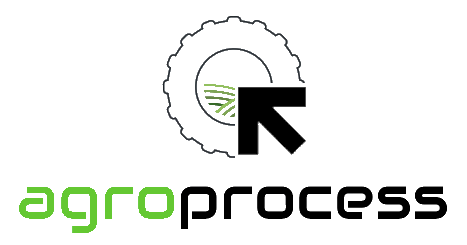

Automação Agropecuária · Setbox
Do campo ao sistema, sem atrito
Agroprocess automatiza os processos operacionais do agronegócio. Integração com cooperativas, digitalização de contratos e rastreabilidade completa, do produtor à cooperativa.

O problema
O agronegócio cresceu. Os processos, não.
Produtores e cooperativas ainda operam com planilhas, documentos em papel e digitação manual em múltiplos sistemas. O dado nasce no campo e morre numa gaveta.
Contratos, laudos técnicos, registros de produção, solicitações de crédito - tudo tramitado por e-mail, WhatsApp e formulários físicos.
A Agroprocess resolve isso conectando o produtor rural à sua cooperativa com fluxos automatizados, rastreáveis e auditáveis.
Soluções
Automação pensada para o campo
Integração com cooperativas
Conecte o produtor diretamente aos sistemas da cooperativa. Dados fluem automaticamente, sem redigitação.
Digitalização de contratos
Contratos, laudos e declarações assinados digitalmente. Rastreabilidade completa e validade jurídica.
Monitoramento de produção
Registro de safra, estoque e indicadores produtivos em tempo real. Decisões baseadas em dados atualizados.
Rastreabilidade de insumos
Entrada, uso e saldo de insumos rastreados por talhão. Conformidade com exigências sanitárias e de exportação.
Alertas e notificações
Vencimentos de contratos, pendências documentais e anomalias de processo notificados automaticamente.
Relatórios e auditoria
Histórico completo de operações exportável. Relatórios para financiamentos, auditorias e prestação de contas.
Para quem
Quem usa a Agroprocess
Produtores rurais
Propriedades que precisam digitalizar laudos, registros de produção e contratos sem depender de escritórios externos.
- →Acesso via tablet ou celular no campo
- →Funciona com conectividade limitada
Cooperativas
Cooperativas agropecuárias que precisam integrar fluxos de crédito, insumos e produção dos seus associados.
- →Painel consolidado de associados
- →Integração com sistemas financeiros
Agroindústrias
Empresas de beneficiamento e processamento que precisam rastrear a cadeia produtiva da origem ao produto final.
- →Rastreabilidade para exportação
- →Conformidade sanitária automatizada
Ecossistema
Integra com o que você já usa
A Agroprocess não substitui seus sistemas. Ela os conecta. ERPs, sistemas de cooperativas, plataformas financeiras e ferramentas de rastreabilidade.
Leve automação para o seu campo
Fale com a equipe Agroprocess e descubra como automatizar os processos da sua propriedade ou cooperativa.
Solicitar demonstração